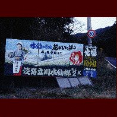

ナゾのパラダイス/兵庫県洲本市
兵庫県なのにほとんど四国扱いの淡路島。その淡路島に関西屈指の珍スポットがある。その名も「ナゾのパラダイス」。「立川水仙郷」とも言う。
テレビなどでもよく紹介されているので知っている方も多いと思うが、世を忍ぶ仮の姿は水仙郷＆レジャーランド。ここ寺なのか？という向きもあろうが、実はここは園内で長寿祈願をやったり怪しげな神社が2つもあったりと立派な（？）宗教施設なのだ！と、無理にこじつけたところで早速「ナゾパラ」に潜入してみよう。
ここに行くにはまずは強烈な客引きを展開するオバチャンの待つゲートを潜らなければならない。そこで入場料500円也を払うと、引きかえに各アトラクション（と呼んでしまっていいのだろうか・・・）の入場券と土産の男女和合せんべいと直径10�B程度の小さなフリスビーを渡される。
一体このフリスビーは何じゃいと思いつつ恐ろしい程の急な坂道を降りていくとUFO神社なる怪しげなモノが待っている。実は例のフリスビーはここから願いを込めて投げるモノらしく、崖の下にはフリスビーがゴロゴロと落ちている。その様は単なるごみ捨て場といった雰囲気。
横には「たけし・さんまの超偉人伝」と「探偵ナイトスクープ」の放映記念碑がでかでかと並ぶ。
ここははっきりいってチンケなスポットである。しかしその異常なまでのチンケさに一部の珍スポマニアには聖地として崇められており、気が付けば若者を中心に結構人が入っている。もしかしたら「おのころ愛ランド」休止中の今（1998年現在）、淡路島最大の観光スポットなのかも知れない。中にはこんな所と知らずに水仙を愛でに来るオバサマなども来てしまったりするのだが、勿論そんな方々は「金返さんかコラア」といわんばかりの目つきで憮然となさっている。
半分腐りかかった犬をオリのなかにぶち込んであるだけのもの凄い（床とか階段とか抜けてました）動物園を過ぎると一応メインの、水仙が咲き誇る花畑などがある。
しかし、ここに来たほとんどの客は水仙などには目もくれず奥の建物のほうへと吸い込まれていく。そこには食堂と土産物屋の他に民族資料館＆アーチェリー場＆エアガン射撃場＆カラオケ道場、そして立川神社こと究極の秘宝館が詰め込まれている。
館内の雰囲気は完全に昭和40年代で止まっている。しかもあちこちに貼られているハリガミのキャッチコピーの凄いこと。「ハア～ハア～笑うところ」「ブレキー点検」等々。言語感覚が完全に炸裂している。ちなみにアーチェリー場＆エアガン射撃場＆カラオケ道場はほぼ使用不可能状態でした。
で、秘宝館なのだが、もう、口にするのも情けない位のストレートなコピーと展示が延々と続く。敢えて詳しくは述べないので写真を見て察して下さい。
このパラダイス、行けば身体から全ての生気が吸い取られること必死。でもそれはそれで結構楽しいんだよね。
1998.2.
珍寺大道場 HOME